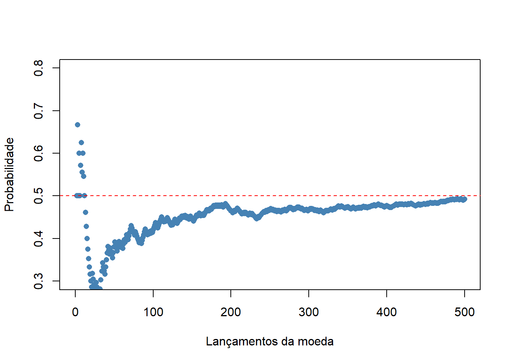

Capítulo 3 Iniciando o RStudio
3.1 Interface do RStudio
Ao abrir o RStudio, você verá a seguinte tela. As cores e fontes podem variar dependendo do seu sistema operacional, mas o layout será o mesmo.
\(~\)
\(~\)
Os quadros coloridos (vermelho, azul e amarelo) foram acrescentados para melhor identificação dos painéis principais.
No Console os comandos serão executados e é onde aparecerá a saída com os resultados.
No Ambiente aparecerá uma lista organizada do que foi criados, bem como as variáveis.
Na janela em amarelo estão os gráficos criados (aba Plots), os arquivos do computador (aba Files), os pacotes baixados (aba Packages), a ajuda (aba Help) e o visualizador (aba Viewer).
\(~\)

\(~\)
Apesar de ser possível escrever seus códicos e executá-los diretamente no Console, preferencialmente, digite-os neste novo painel e envie para serem executados no Console, utilizando o botão Run ou o atalho Ctrl + Enter .
Quando o R Script é aberto, ele aparece sem título (Untitled1) e ao salvá-lo devemos dar um título. A partir daí, ele estrá disponível para ser novamente utilizado. Esta é uma das diferenças importantes com o Console. Todos os comandos usados no Console não podem ser salvos, porisso o Console é utilizado para realizar comandos temporários e rápidos que não necessitam ser salvos.
Os nossos scripts devem ser salvos em um diretório relacionados a eles. O ideal é criarmos um novo projeto para cada análise.
3.2 Iniciando um novo projeto
Quando começamos um trabalho com um novo banco de dados, um Novo Projeto deve ser criado. Para isso, clicar File > New Project ou clicar no menu que está na parte superior, à direita, Project (none) > New Project…. Abrirá a janela abaixo. Clique em New Directory para criar um novo diretório. Por exemplo, para as aulas de Bioestatística usando o R, pode-se criar um diretório com este nome ou qualquer outro nome.
\(~\)
\(~\)
Quaisquer documentos Excel ou arquivos de texto associados podem ser salvos nesta nova pasta e facilmente acessados de dentro de R, indo ao menu Project (none) > Open Project…. Você pode então realizar análises de dados ou produzir visualizações com seus dados importados.
3.3 Primeiro Script
O R Script, como foi dito antes, é o local preferido para entrar com os comandos. Inserir 3 ou mais caracteres de um comando em um script abrirá o menu de comando sugerido. Este menu sugere comandos ou nomes de variáveis que você pretendeu digitar, junto com uma descrição e uso sugerido. Vamos imaginar que queremos saber o logaritimo na base 10 de um número. Quando digitamos dentro do R Script a palavra log , abre-se o menu de autocompletar, como mostrado na figura.
\(~\)
\(~\)
Completando o R Script e executando, veremos o resultado no no Console:
log10(100)## [1] 2Selecione, Copie e cole em um R Script os comandos abaixo. Execute-os clicando no botão Run ou usando o atalho Ctrl + Enter .Veja os resultados no seu Console:
x=1:500
y=cumsum (sample (0:1,500, rep=TRUE))
plot (x,y/1:500,
ylab="Probabilidade", xlab = "Lançamentos da moeda",
ylim=c (0.3,0.8), xlim=c (0,500),
pch=16,
col="steelblue")
abline(h = 0.5, col = "red", lty = 2)Complicado? Sim, a primeira vista parece complicado, complexo, mas à medida que os conhecimentos forem se acumulando estes comandos ficarão simples.
Na aba Plot, no painel inferior, à direita, aparecerá o resultado dos comandos acima que deve ser:

\(~\)Observação: É importante o acompanhamento do tutorial com o RStudio aberto. Crie um R Script. Copie os comandos do tutorial (retangulos cinza claro) e execute os mesmos para ver o resultado no Console ou na aba Plots. Compare com o tutorial.

\(~\)